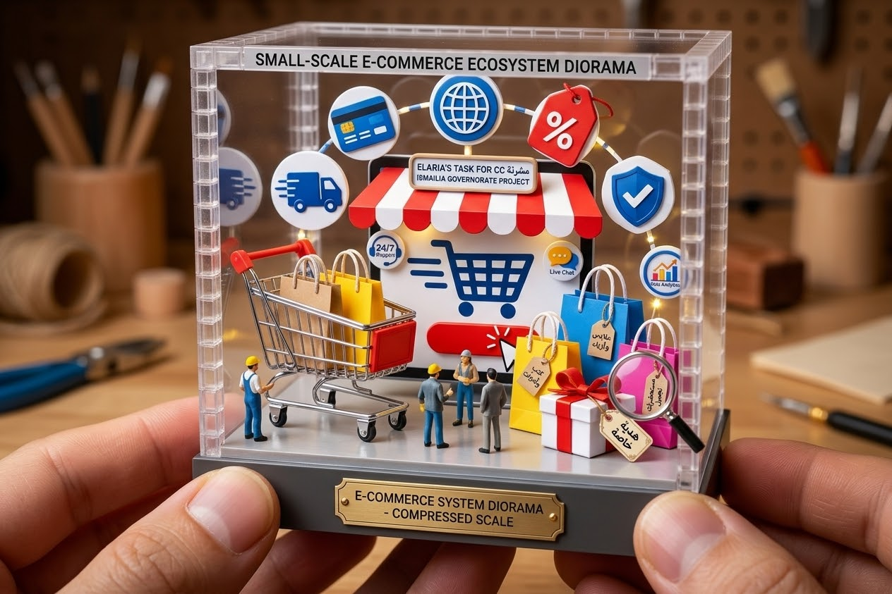

الاسم :
الرقم الجماعى:2503457
اصبحت التجاره الالكترونيه من الوسائل المهمه فى عالم الاعامل فهى تتبح عرض المنتجات والخدمات وبيعهاعبرالانترنت العملاء على الوصول الى خبارات متعدده من اماكن مختلفه وتعتمد هذه العمليه على منصات رقميه تنظم عرض المنتجات واستقبال الطلباتوالدفع والتوصيل والتواصل مع العملاء
منصه التجاره الالكترونيه هى موقع اوتطبيق اونظام رقمى ينتج اجراء عمليات البيع والشراءعبر الانترنت وفد تكون متجرا خاصا بشركه واحده او سوقا الكترونيا يجمع عددا من البائعين فى مكان واحد وتدعم المنصه رحله العميل بدايه من البحث عن المنتج مرورا باتمام الطلب وصولا الى متابعه الشحن وخدمه ما بعد البيع
1-شركه الى مستهلك (B2C)
2شركه الى شركه (B2B)
3مستهلك الى مستهلك (C2C)
4الاسواق متعدده البائعين

| النوع | مثال |
|---|---|
| B2C | امازون ونون |
| B2B | على بابا |
| C2C | اوليكس |